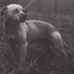
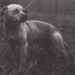

Crenshaw's Champion Jeep 4xw ROM

Early Life
Crenshaw’s Ch Jeep R.O.M was born the August of 1976 at James Crenshaw’s courtyard, off spring of the famous Finley Ch Bo R.O.M and Crenshaw’s Ch Honeybunch R.O.M. This coupling was done only once by James Crenshaw and Maurice Carver, for reasons not known.
This cross produced four champions, the most famous of the four was Crenshaw’s Ch Jeep R.O.M but there was also Crenshaw’s Ch Missy that was fundamentally the producer of the Crenshaw yard. Crenshaw’s Ch Holly famous for her terrible bite and ability in the matches. Crenshaw’s Ch Charlie was said by some breeders of America to have been even better than Jeep.
Career
Jeep was bred by James Crenshaw that sold him at 2 years of age to James Garrett his assistant. Jeep won four official fights against the best four American Pit bulls of America. His first match was against Pylant’s Ch Kato weighing 43 pounds and winning in 28 minutes. The second match was against Cooper’s Weenie also weighing in at 43 pounds with a victory in 58 minutes. The third match was against Stinson and Stepp’s Black Dog weighing 42 pounds, a victory in 2 hours and 5 minutes. For his fourth and last encounter in the pit Jeep was to face Ozzie Stevens Ch Homer.
Ch Homer, the most famous American Pitbull Terrier of that time, the very dog no breeder had had the courage to put their own dogs to confront in a match. James Garrett had this courage believing profoundly in Jeep’s incredible qualities and so it was, Jeep the better adversary of the two, won against Ozzie Stevens’ Ch Homer weighing in at 43 pounds, in 3 hours and 45 minutes.
The match between these two Titans made history. Even though Jeep was the winner, Ozzie Stevens Ch Homer is remembered by the great breeders as a deigned representative of the American Pitbull Terrier and the only one that could have put Crenshaw’s Ch Jeep R.O.M. to the test. Making Jeep famous and establishing his formidable value as a fighter, James Garrett proceeded to use his best qualities, that being the capacity to reproduce; a staggering figure of mountings as Champion and Grand Champion was 360 times. He had a reputation for being unmatchable and received the most important awards in America. P.O.R (Producer Of Record), and R.O.M (Register Of Merit). Only later his record would be broken by the most famous of his offspring Garrett’s White’s Tab R.O.M that was coupled 640 times.
Some crosses noted in the American Pitbull Terrier World in which Jeep’s blood merged with
other bloodlines, showed a great compatibility and gave birth to great examples such as
Jeep-Red Boy/Jeep-Rascal/Jeep-Red Boy-Rascal/Jeep-Bolio.
Jeep’s offspring that made history are Garrett’s White’s Tab R.O.M, White’s Tabby Girl
R.O.M, White’s Irene, Garrett’s Floyd R.O.M, Garrett’s CH Tramp R.O.M, Garrett’s Shorty,
Garrett’s Rocky R.O.M, Garrett’s Jeep Junior R.O.M, Garrett’s Harley R.O.M, Garrett’s
Bridgett R.O.M, Crenshaw’s Dolly R.O.M, Crenshaw’s Honeybear R.O.M, Indian Missy R.O.M,
Indian Rocky R.O.M, Long’s Werdo R.O.M, and Mason’s Smile R.O.M.
Crenshaw’s Ch Jeep R.O.M was considered by many breeders as the supreme American Pitbull
Terrier of the last 30 years, he established his final supremacy in dog fighting and in
reproduction and no Pitbull since has matched this impact.
 

Jeep’s offspring that made history are Garrett’s White’s Tab R.O.M, White’s Tabby Girl
R.O.M, White’s Irene, Garrett’s Floyd R.O.M, Garrett’s CH Tramp R.O.M, Garrett’s Shorty,
Garrett’s Rocky R.O.M, Garrett’s Jeep Junior R.O.M, Garrett’s Harley R.O.M, Garrett’s
Bridgett R.O.M, Crenshaw’s Dolly R.O.M, Crenshaw’s Honeybear R.O.M, Indian Missy R.O.M,
Indian Rocky R.O.M, Long’s Werdo R.O.M, and Mason’s Smile R.O.M.
Crenshaw’s Ch Jeep R.O.M was considered by many breeders as the supreme American Pitbull
Terrier of the last 30 years, he established his final supremacy in dog fighting and in
reproduction and no Pitbull since has matched this impact.